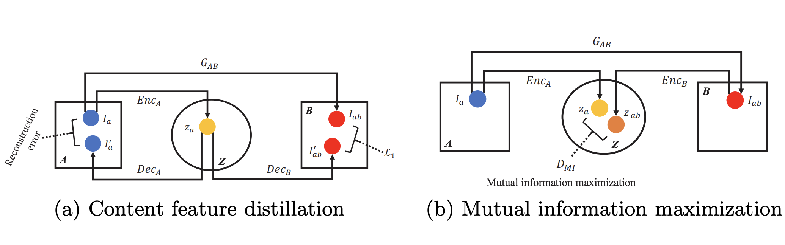
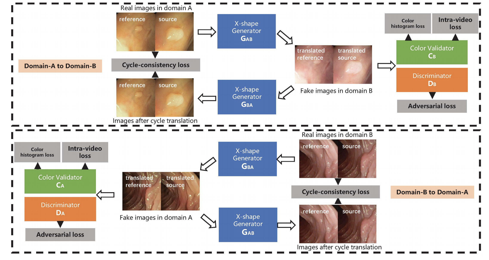

Jiawei ChenResearcher on Computer Vsion
Dept. of Biomedical Engineering |
 |


Biography
I am currently a researcher at Tencent focusing on Medical AI applications. My group leader is Dr. Yefeng Zheng. Previously, I received the MA. Eng (honors) degree from Southern Medical University in 2018, under the supervison from Prof. Xin Zhen.
My research interest lies in medical image analysis and deep learning, for improving the public healthcare & medical diagnosis with machine intelligence. Recently, I am exploring model generalization and robustness for wide applicability of AI models in complex clinical environments.
News
- [08/2020] Paper on self-supervised COVID-19 diagnosis was accepted by IEEE JBHI.
- [07/2020] Paper on image-to-image domain adaptation (OP-GAN) was accepted by ECCV'20.
- [06/2020] Three Papers on domain adaptation, self and semi-supervised segmentation were accepted by MICCAI'20.
- [05/2020] Paper on cervical cancer diagnosis was accepted by IEEE TMI.
- [04/2020] Paper on multi-task self-supervised learning was accepted by ISBI'20.
- [11/2019] Paper on video-to-video domain adaptation (VideoGAN) was accepted by AAAI'20.
Publications
| Efficient and effective training of covid-19 classification networks with self-supervised dual-track learning to rank. Yuexiang Li*, Dong Wei*, Jiawei Chen*, Shilei Cao, Hongyu Zhou, Yanchun Zhu, Jianrong Wu, Lan Lan, Wenbo Sun, Tianyi Qian, Kai Ma, Haibo Xu, Yefeng Zheng. IEEE Journal of Biomedical and Health Informatics (JBHI), 2020. [paper] |
|
| Self-Supervised CycleGAN for Object-Preserving Image-to-Image Domain Adaptation. Xie Xinpeng*, Jiawei Chen*, Li Yuexiang, Shen Linlin, Ma Kai, Zheng Yefeng. European Conference on Computer Vision (ECCV), 2020. [paper] |
|
|  | MI^2GAN: Generative Adversarial Network for Medical Image Domain Adaptation Using Mutual Information Constraint. Xie Xinpeng*, Jiawei Chen*, Li Yuexiang, Shen Linlin, Ma Kai, Zheng Yefeng. Medical Image Computing and Computer Assisted Intervention (MICCAI), 2020. [paper] |
| Instance-aware self-supervised learning for nuclei segmentation. Xie Xinpeng*, Jiawei Chen*, Li Yuexiang, Shen Linlin, Ma Kai, Zheng Yefeng. Medical Image Computing and Computer Assisted Intervention (MICCAI), 2020. [paper] |
|
| Self-loop uncertainty: A novel pseudo-label for semi-supervised medical image segmentation. Yuexiang Li, Jiawei Chen, Xinpeng Xie, Kai Ma, Yefeng Zheng. Medical Image Computing and Computer Assisted Intervention (MICCAI), 2020. [paper] |
|
| Computer-aided cervical cancer diagnosis using time-lapsed colposcopic images. Yuexiang Li*, Jiawei Chen*, Peng Xue, Chao Tang, Jia Chang, Chunyan Chu, Kai Ma, Qing Li, Yefeng Zheng, Youlin Qiao. IEEE transactions on Medical Imaging (TMI), 2020. [paper] |
|

|
A multi-task self-supervised learning framework for scopy images. Yuexiang Li, Jiawei Chen, Yefeng Zheng. IEEE International Symposium on Biomedical Imaging (ISBI), 2020. [paper] |
|  | Generative adversarial networks for video-to-video domain adaptation. Jiawei Chen, Yuexiang Li, Kai Ma, Yefeng Zheng. Proceedings of the AAAI Conference on Artificial Intelligence (AAAI), 2020. [paper] |
| Investigating rectal toxicity associated dosimetric features with deformable accumulated rectal surface dose maps for cervical cancer radiotherapy. Jiawei Chen, Haibin Chen, Zichun Zhong, Zhuoyu Wang, Brian Hrycushko, Linghong Zhou, Steve Jiang, Kevin Albuquerque, Xuejun Gu and Xin Zhen. Radiation Oncology, 2018. [paper] |
|
| Deep convolutional neural network with transfer learning for rectum toxicity prediction in cervical cancer radiotherapy: a feasibility study. Xin Zhen, Jiawei Chen, Zichun Zhong, Brian Hrycushko, Linghong Zhou, Steve Jiang, Kevin Albuquerque and Xuejun Gu. Physics in Medicine & Biology, 2017. [paper] |
|
Honors & Awards
-
First Prize of Tencent WeInnovate Awards, Tencent, 2020 -
Best Paper Award on The International Workshop on Multiscale Multimodal Medical Imaging, Shenzhen, 2019 -
Science Council Session Award on The 59th Annual Meeting of AAPM, Denver, 2017 -
Chinese National scholarship, Southern Medical University, 2017 -
First Prize of Academic Scholarship, Southern Medical University, 2014 & 2016 & 2017
Professional Activities
-
Conference Reviews:
AAAI Conference on Artificial Intelligence (AAAI)
International Conference on Medical Image Computing and Computer-Assisted Intervention (MICCAI)
-
Journal Reviews:
IEEE Transactions on Medical Imaging (TMI)
IEEE Journal of Biomedical and Health Informatics (JBHI)
Neurocomputing
© Jiawei Chen | Last updated: Oct 2020